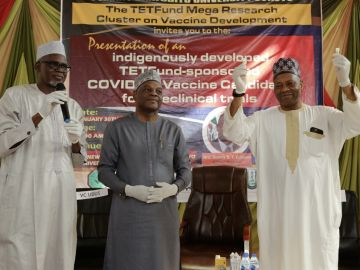

OUR LATEST NEWS
For more information on TETfund activities and programmes..follow our Daily
News Update!
By HADIZA MAMU
04 MAY: PRESIDENT
BUHARI APPROVES
N320 BILLION FOR
2023 INTERVENTION
BUDGET
President Muhammadu Buhari, has graciously
approved the sum of N320 billion for the 2023
Intervention Budget of Tertiary Education
Trust…
READ MORE
By HADIZA MAMU
04 MAY: TETFUND SETS
NEW DAWN IN FRANCE-
NIGERIA RELATIONS …
SIGNS MOU WITH
CAMPUS FRANCE
The Tertiary Education Trust Fund (TETFund)
has set a new dawn in the relationship between
Nigeria and France with the…
READ MORE
By HADIZA MAMU
28 MAR: ECHONO: A
DISRUPTOR’S ONE-
YEAR SCORECARD AT
TETFUND. BY ENIOLA
OLAKUNRI
TETFund: Boosting Labour Market Prospects
For Varsity Graduates “All you need is the plan,
the roadmap and the courage to…
READ MORE
By HADIZA MAMU
17 MAR: NIGERIA,
ISRAEL TO DEEPEN
PARTNERSHIP IN
INNOVATION,
ENTREPRENEURSHIP
AND PRODUCTION
Nigeria and Israel have commenced
collaborative moves to deepen partnership in
innovation, entrepreneurship and production
with the aim of harnessing…
READ MORE
By HADIZA MAMU
07 FEB: TETFUND
ENGAGES
STAKEHOLDERS ON
NATIONAL
EMPLOYABILITY
BENCHMARKING
PROGRAMME
To improve employability and help steer higher
education institutions towards better
alignment with market needs, the Tertiary
Education Trust Fund…
READ MORE

By HADIZA MAMU
04 FEB: NIGERIAN
RESEARCHERS HAND
OVER COVID-19
VACCINE FOR PRE-
CLINICAL TRIAL
A consortium of Nigerian researchers engaged
in the Vaccine Development Mega Research
Project at Usmanu Danfodiyo University,
Sokoto (UDUS), sponsored…
READ MORE
VIEW ALL NEWS